Read top-to-bottom for the full story: partitions and fan-out, the two side-by-side comparisons, atomic ack & push, replay from any timestamp, lease/retry/DLQ, and finally the disk-failover path.
Producers push tasks into agent-tasks. Each agent session is its own
FIFO partition, created on first push, no preallocation. Consumer groups
agent runner and tracer each consume the same stream
with their own offset. A 28-second tool call on sess:9c1d stalls
only itself; the other 9,999 sessions keep flowing.

Kafka shards into a fixed number of physical partitions and routes entities by
hash. With 12 entities and 4 partitions, three unrelated entities share each
lane. When user:003 goes slow, user:007 and
user:011 are blocked because they share p2. Queen
gives every entity its own logical lane — one slow entity stalls only
itself.

To get per-entity ordering in RabbitMQ you allocate one queue per entity. With
10,000 entities, that's 10,000 Erlang processes, ~2.4 GB of process heap, and
10,000+ file handles. Queen gets the same per-entity ordering with one queue
whose partitions are index rows in PostgreSQL: 52 MB of broker
memory, 0 extra processes, and a btree on
(queue_id, partition) that stays flat to a million-plus partitions.

A worker pops a message from raw-events, transforms it, and pushes
the derived message into processed-events. The ack of the input
and the insert of the output are wrapped in one PG BEGIN…COMMIT
with a single WAL record. Either both rows commit, or neither does — no
orphan output, no duplicate ack, no separate outbox table.

PostgreSQL is the source of truth, so every message ever pushed is queryable by
every consumer group. The agent-runner group is at the head; a new
report-fall-2024 group joins with
subscriptionFrom: 2024-09-01 and replays the historical window
while the live group keeps running unaffected. No log retention to manage; PG
retention policies decide how far back you can go.

A popped message is leased to one consumer for leaseTime. If the
consumer crashes or fails, the lease expires and the message returns to the
head of the partition with the retry counter incremented. Order is preserved.
After retryLimit retries it routes to the per-queue DLQ with the
original payload, last error, and retry trace — ready to browse, filter,
and replay from the dashboard.

When PostgreSQL becomes unreachable, pushes don't fail. The broker writes them
to a local FILE_BUFFER on disk and acknowledges to the client.
When PostgreSQL recovers, a background scanner streams the buffered events back
into the database in order. Verified across 1.6 billion
events in our benchmark suite with zero loss and zero duplicates.
![Three-phase loop. Phase 1: producers push to broker, broker commits to PostgreSQL, status 'all healthy'. Phase 2: PostgreSQL becomes unreachable, the PG card border flashes red, broker spills new pushes to the FILE_BUFFER on local disk, buffered counter grows from 0 to 312, status 'postgres unreachable, spilling pushes to local FILE_BUFFER, clients still get HTTP 201'. Phase 3: PostgreSQL recovers, the broker drains the buffer back into the database in order, status 'postgres recovered, draining file buffer back to db'. The 'messages lost' counter remains 0 throughout.](assets/queen-failover.svg)
Spin it up locally with two docker run commands, browse the
reference docs, or read the comparison benchmarks against Kafka and RabbitMQ.